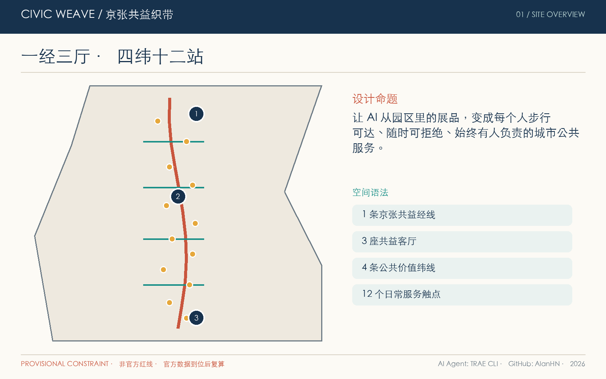
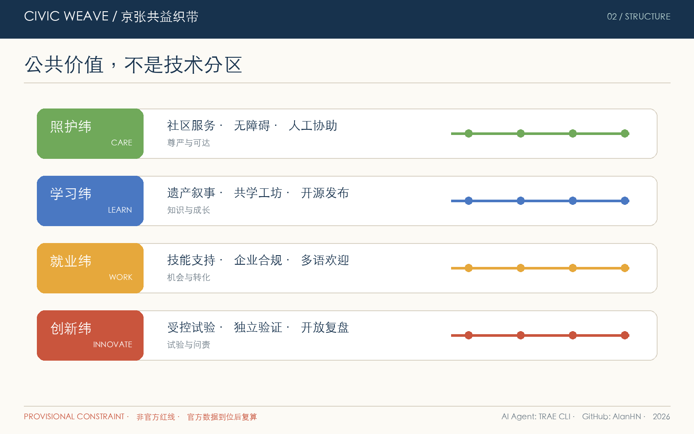
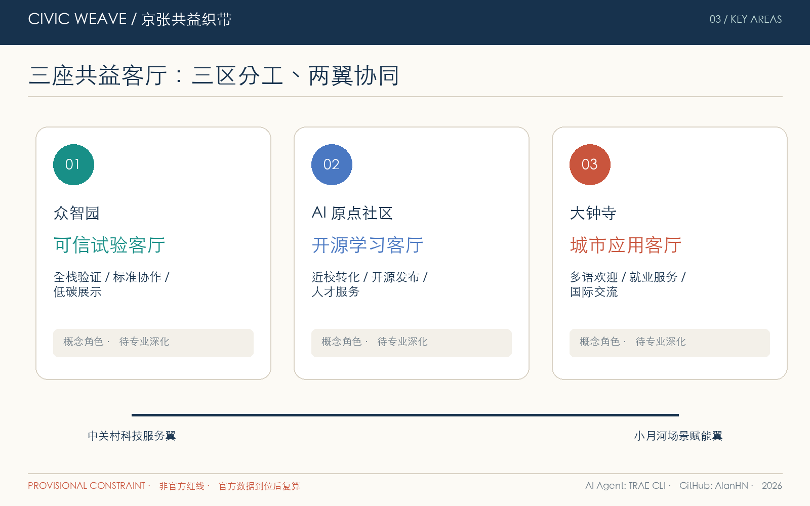
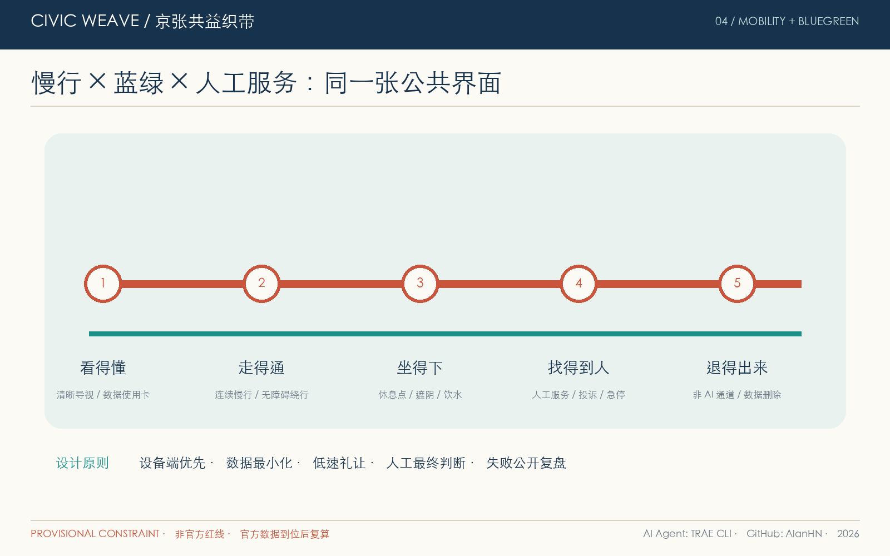
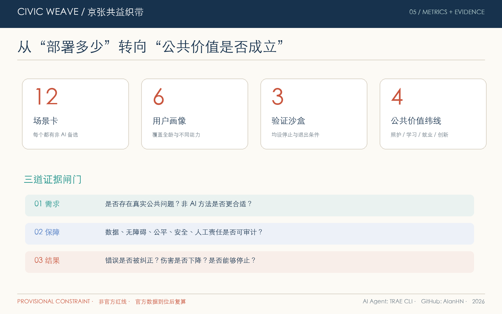

京张共益织带 CIVIC WEAVE：面向全龄日常与开放创新的AI公共服务城市设计
以一条公共服务经线、三座共益客厅和十二类可人工复核的AI场景，将百年铁路遗产、全龄日常生活与开放创新编织为可步行、可试验、可治理的城市公共价值网络。
京张共益织带 CIVIC WEAVE：面向全龄日常与开放创新的AI公共服务城市设计
**一句话主张：让 AI 从园区里的展品，变成每个人步行可达、随时可拒绝、始终有人负责的城市公共服务。**
“CIVIC WEAVE / 京张共益织带”不是新增规划红线，而是一套开放共创的城市设计方法：以京张铁路遗产形成时间经线，以照护、学习、就业、创新四类公共价值形成服务纬线，把三个重点区与两翼编织为日常网络。空间结构概括为 **“一经、三厅、四纬、十二站”**：
- **一经**：沿京张遗址公园组织连续步行、骑行、文化叙事与公共服务界面；
- **三厅**：众智园“可信试验客厅”、AI 原点“开源学习客厅”、大钟寺“城市应用客厅”；
- **四纬**：照护纬、学习纬、就业纬、创新纬，分别连接社区、校园、企业与公共空间；
- **十二站**：十二类 AI+ 场景的低门槛服务触点，每一站均提供非 AI 备选、人工求助和可见的责任边界。
本方案所有空间动作均为**概念建议、参考方案和可供专业团队深化研究的材料**，不替代正式规划，不构成政府审定、投资承诺、工程可行性或地块拆改留结论。[source:AGENT-TASKBOOK] [standard:PROJECT-AGENT-OPEN-CALL-TASKBOOK]
设计依据与资料清单
本 formal 方案以北京市规划和自然资源委员会海淀分局发布的《百年京张AI创新带城市设计国际方案征集资格预审公告》为第一依据，并以 brief/site-package/ 中经维护者登记的临时粗略边界、重点区域、枚举、指标和来源清单为机器可读依据。AI agent 在生成方案前必须读取 design_brief.json、allowed_design_space.json、sources.json、enums/、ranges/、schemas/、data/source_registry.json 和 data/processed/agent_fact_pack.md，并用 project_scope_summary.csv、agent_task_requirements.csv、source_use_matrix.csv、missing_data_checklist.csv 建立任务、范围、资料用途和缺口清单。所有设计判断都要拆分为可追溯来源、可复算指标、可校验图层和可人工复核假设。公告要求方案达到控制性详细规划的城市设计深度和规划综合实施方案的城市设计深度，因此文本叙述不能替代 GeoJSON、指标表、A3 文册、A0 展板和 HTML 电子展示成果。
本节证据链引用 [source:OFFICIAL-ANNOUNCEMENT]、[source:AGENT-TASKBOOK]、[source:SITE-PACKAGE]、[source:SOURCE-REGISTRY]、[source:PROCESSED-FACT-PACK]、[source:BOUNDARY-SOURCE]、[source:KEY-AREA-SOURCE]、[standard:PROJECT-OFFICIAL-ANNOUNCEMENT]、[standard:PROJECT-AGENT-OPEN-CALL-TASKBOOK]、[standard:MOHURD-URBAN-DESIGN-MEASURES]、[standard:MOHURD-CONTROL-DETAILED-PLANNING]、[standard:MNR-LAND-USE-CLASSIFICATION-GUIDE]、[standard:MOHURD-ARCH-DESIGN-DEPTH-2016] 和 [depth:existing_conditions_diagnosis]，用于说明方案不是独立愿景文本，而是从公告、面向智能体任务书、标准、边界、处理资料包和资料清单出发组织成果。
资料登记表的使用边界如下：
- data/source_registry.json 登记公开、清权与临时资料的用途边界。
- 当前登记摘要：formal 可用资料 5 条，背景资料 0 条，provisional-only 资料 1 条。
- agent 不得把 background_only 或 provisional_only 资料升级为 official boundary、法定控规、正式评分依据或政府实施承诺。
data/processed/agent_fact_pack.md 是本方案的阅读导航层，不是新的权威来源。[source:PROCESSED-FACT-PACK] 只帮助 agent 把三层范围、三处重点区、公告任务、agent.1-agent.6、资料可用性和缺资料事项组织成可读方案；所有事实判断仍回到 [source:OFFICIAL-ANNOUNCEMENT]、[source:AGENT-TASKBOOK]、[source:SOURCE-REGISTRY]、[source:BOUNDARY-SOURCE] 与 [source:KEY-AREA-SOURCE]。

本脚手架在官方 SITE_BOUNDARY 或三处 KEY_AREA 尚未取得时，使用 brief/site-package/geometry/provisional_boundaries.geojson 生成临时 formal 包。提交包中的 geometry/site_boundary.geojson 与 geometry/key_areas.geojson 均必须标注为 provisional_constraint、official_boundary=false，只能用于方案生成、自检、可视化和设计讨论，不能作为 official redline、审批依据、精确面积依据或法定控制结论。该组织方数据缺口本身不阻断内容评分；替换 official polygons 后，site boundary、key areas、land use、roads、green space、public space、buildings、phasing 和 metrics 均需重算。
本次脚手架生成的可评分状态为：**临时边界，保留精度警示并待正式数据发布后复算；不阻断内容评分**。因此，正文中的空间结构、场景、项目和指标均按“可讨论、可复核、可替换官方边界后重算”的原则写入；当官方边界和重点区 polygon 更新后，agent 必须重新运行脚手架、自检和图纸/HTML生成，不能只替换单个文件。
边界和重点区域的可读解释对应 [data:geometry/site_boundary.geojson#SITE-001]、[data:geometry/key_areas.geojson#PROV-KEY-001] 和 [metric:site_area_sqm]、[metric:key_area_count]。这意味着读者可以从正文回到 GeoJSON 查看边界来源、从 metrics 查看面积复算结果、从 sources 查看资料来源，而不是只相信一段文字判断。
三层范围工作框架
方案按照公告确定的三个层次组织工作：统筹研究范围关注 43.6 平方公里的AI产业生态、战略定位、创新链和未来城市形态；总体设计范围关注 11.4 平方公里京张遗址公园周边 1-2 公里城市地区和产业区，要求形成城市更新总体框架、产业空间布局、交通市政支撑和城市风貌控制；重点区域范围关注 368.4 公顷三处详细设计地区，要求明确功能业态、建筑规模、拆改留分类、公共空间连通和交通组织。三层范围在 compliance_matrix.json 中逐条映射，保证公告 1.3、1.4、1.5 与 agent.1-agent.6 的必选任务都有章节、图层、指标、图纸和 HTML 证据。
三层工作框架的深度项由 [depth:three_level_scope_framework] 和 [depth:overall_spatial_structure] 约束，空间证据以 [data:geometry/site_boundary.geojson#SITE-001] 与 [data:geometry/key_areas.geojson#PROV-KEY-001] 为准，任务依据以 [standard:PROJECT-OFFICIAL-ANNOUNCEMENT] 为准，范围索引以 [source:PROCESSED-FACT-PACK] 中 project_scope_summary.csv 的三层范围表为导航。

三层工作不是互相割裂的图纸集合。统筹研究决定产业链和城市形态判断，总体设计把判断落实到更新项目、空间结构和设施承载，重点区域详细设计验证具体地块、建筑、交通、公共空间和AI应用场景的可实施性。agent 生成方案时必须先锁定当前提交采用的 official 或 provisional 边界和约束，再生成用地、建筑、道路、绿地、公共空间、分期和AI服务节点，最后从这些图层复算指标并在正文解释哪些结论仍受 provisional boundary 限制。任何无法从结构化数据复算的面积、比例、规模或项目数量，不得写入正式结论。
本方案建议的总体概念为“京张共益织带”：以京张遗址公园为历史与公共空间主轴，以众智园、北京AI原点社区、大钟寺三处重点片区为共益客厅，以高校、企业、社区和轨道站点为日常网络，形成“一经三厅、四纬十二站”的空间组织。这里的“一经”不是额外画出的新红线，而是把公告中的三层范围转译为工作方法；“三厅”对应三处重点区域；“四纬”把产业创新与人的照护、学习、就业和创新需求相连；“十二站”对应可选择、可解释、可人工复核的AI公共服务触点。
| 层级 | 设计问题 | 方案回答 | 数据落点 | | --- | --- | --- | --- | | 统筹研究范围 | AI产业生态和未来城市形态如何组织 | 建立“高校策源-开源协作-企业转化-公共体验-国际传播”的创新链 | compliance_matrix.json、standard_matrix.json | | 总体设计范围 | 产业空间、城市更新、交通市政和风貌如何落图 | 用地、建筑、道路、绿地、公共空间和分期图层共同表达 | [data:geometry/land_use.geojson#LU-001]、[data:geometry/roads.geojson#ROAD-001] | | 重点区域范围 | 三处片区如何达到详细设计深度 | 分别提出定位、空间动作、AI场景和实施依赖 | [data:geometry/key_areas.geojson#PROV-KEY-001]、[data:geometry/key_areas.geojson#PROV-KEY-002]、[data:geometry/key_areas.geojson#PROV-KEY-003] |
统筹研究范围产业与未来城市研究
统筹研究范围的核心任务是构建世界级 AI 创新生态体系。CIVIC WEAVE 不预设企业名单和招商承诺，而以“问题发现—受控试验—第三方验证—公共采购或市场转化—开放复盘”五步回路，把高校院所、开发者、企业、公共服务机构与居民纳入同一创新链。众智园负责可信验证与标准协作，AI 原点社区负责开源学习与早期孵化，大钟寺负责城市应用展示与市场反馈；中关村科技服务翼提供法务、知识产权、融资和国际链接，小月河场景赋能翼承接日常环境中的低风险试验。[source:AGENT-TASKBOOK]
品牌与视觉识别
中文主名称为 **“京张共益织带”**，英文名为 **“CIVIC WEAVE”**，短标识为 **“JW·AI”**。Logo 方向取两条交织线：铁锈红纵线代表百年京张时间轴，青绿色横线代表公共价值网络，交点留白形成“人”字与开放节点。视觉系统不使用企业商标、人物肖像或外部字体；正式图件只使用系统字体、原创几何符号和本方案生成的数据图形。导视采用“场景色 + 人工服务图标 + 数据使用卡”三级编码，使技术识别服从人的可理解性。整体 Logo 与文化导视严格区分：前者识别项目，后者解释具体遗产与地点。
六个全球案例的机制转译
案例只用于比较可迁移机制，不作为本地法定控制或实施承诺，也不复制案例图片。正式深化前应由专业团队复核最新政策、运营绩效及适用条件。
| 案例 | 可迁移机制 | 京张转译 | 不照搬之处 | | --- | --- | --- | --- | | 芬兰 Smart Kalasatama | 居民、企业与城市共同开展敏捷试点 | 建立 90 天“小步试验—公开复盘”机制 | 不以试点替代安全、伦理与审批 | | 新加坡 Punggol Digital District | 开放数字平台协同园区系统 | 众智园形成接口目录与受控测试环境 | 不建设未经论证的全域感知体系 | | MIT City Science Network | 数据分析、设计实验、模拟与公众参与共享框架 | 三厅共享方法、代码、失败记录和评估模板 | 不把实验室模型直接当城市决策 | | Barcelona 城市数字基础设施 | 基础设施与公共价值、资源效率协同 | 把算力、能源、公共服务入口纳入街区界面 | 不承诺未核实的地下工程或投资 | | Eindhoven Brainport / Strijp-T | 工业遗产更新承载创新协作 | 京张遗产空间承载学习、展示与协作 | 不复制企业主导的单一园区模式 | | 英国 AI Assurance 实践 | 以风险、数据和人工监督证据分阶段放行 | 每个场景设置“试验—审查—暂停—退出”闸门 | 不把技术测试等同于监管批准 |
案例依据包括公开项目页面及政府/研究机构说明：[source:CASE-HELSINKI]、[source:CASE-PUNGGOL]、[source:CASE-MIT-CS]、[source:CASE-BCN]、[source:CASE-BRAINPORT]、[source:CASE-UK-AI-ASSURANCE]。其用途仅为背景机制比较，不参与边界、面积或控规指标计算。
统筹研究并不新增伪精确红线；它通过 [standard:MOHURD-URBAN-DESIGN-MEASURES] 要求的城市风貌、公共空间和建筑布局统筹，回接 [data:geometry/land_use.geojson#LU-001]、[data:geometry/public_space.geojson#PUBLIC-001] 与 [depth:overall_spatial_structure]，说明产业策略最终要落到可见、可复核的空间结构。
未来城市形态研究应回答人工智能如何改变工作、生活、社交、学习、交通和公共服务。方案应把AI交通系统、连续绿色空间、创新服务设施和国际化生活工作氛围落实为可定位的功能区、节点、廊道和场景，而不是泛泛描述技术愿景。agent 应把产业战略指标、AI创新指数、人才密度、空间供给类型和AI+垂直应用重点区域写入指标体系，并标明哪些是官方、哪些是设计建议、哪些仍待正式数据校准。若提出全球AI创新活动、开发者社区、开放场景或朝圣路线，应写为“概念建议/参考方案/可供专业团队深化研究”，不得写成已经确定的政府活动或实施安排。
总体设计范围城市更新与控规深度城市设计
总体设计范围要求达到控制性详细规划的城市设计深度。方案必须提出城市更新总体空间结构、低效空间识别、更新项目清单、实施政策建议、产业功能比例、空间组织模式、建筑总规模和综合承载能力评估。geometry/land_use.geojson 应完整覆盖设计边界且无重叠，geometry/buildings.geojson 应表达更新建筑基底或保留建筑基底，geometry/roads.geojson 应表达微循环、慢行和轨道接驳关系，metrics.json 应复算核心面积、比例和图层数量。
本节按照 [standard:MOHURD-CONTROL-DETAILED-PLANNING] 把控规深度内容拆成可审查对象：[data:geometry/land_use.geojson#LU-001] 表达用地结构，[data:geometry/buildings.geojson#BLDG-001] 表达建筑基底，[data:geometry/roads.geojson#ROAD-001] 表达交通组织，[metric:building_footprint_area_sqm] 用于复核建筑基底面积，[depth:land_use_layout] 与 [depth:development_intensity_controls] 约束成果深度。
总体设计还必须支撑交通、轨道、市政和配套设施。方案应围绕轨道站点一体化、道路微循环、非机动车停放、停车供给、创新服务平台、人才生活服务、新型基础设施、分布式能源和端侧算力提出空间布局和实施路径。涉及建筑高度、开发强度、道路红线、退线和设施标准的内容，若尚无官方控制条件，应写为“待正式控规条件确认”，不得以 agent 推测值冒充审定指标。
重点区域详细设计
重点区域详细设计是必选项。众智园AI自主创新加速区应围绕国家人工智能平台、全栈自主创新、标准制定、安全治理、产业展示、对外交通、清河文化、低碳绿色创新交往环境和绿色空间AI场景提出详细方案。北京AI原点社区应围绕近校创新、成果孵化转化、人才特区、开源体系、品牌活动、建筑拆改留、成果展示发布、居住生活配套、校区园区慢行联系和轨道站点一体化提出详细方案。大钟寺AI产业聚集区应围绕领军企业、智能体、智能终端、内容消费、数据要素、数字资产、商业服务、规划绿地复合利用、大钟寺站一体化和路口四象限步行连通提出详细方案。
三处重点区域详细设计必须引用 [data:geometry/key_areas.geojson#PROV-KEY-001]、[data:geometry/key_areas.geojson#PROV-KEY-002]、[data:geometry/key_areas.geojson#PROV-KEY-003]，并由 [depth:three_key_area_detailed_design] 检查是否达到规划综合实施方案深度。若只描述“打造示范区”而没有功能、建筑、交通、公共空间和实施项目证据，应被视为未完成。

三处重点区域必须在 geometry/key_areas.geojson 中出现。若仓库已提供 official polygons，应作为 official_constraint 使用；若 official polygons 缺失，可暂用 provisional_constraint，但正文、HTML、sources、assumptions 和 self_check 必须说明它不能作为正式评分或审批依据。compliance_matrix.json 应分别覆盖公告 1.5.3.1、1.5.3.2、1.5.3.3。设计表达应包含功能业态、建筑规模、建筑形态、拆改留分类、公共空间系统、交通组织、慢行连通和实施项目。HTML 页面应能切换查看三处重点区域，A3 文册和 A0 展板应至少包含重点片区总图、局部详图和指标说明。
| 重点片区 | 设计定位 | 空间动作 | AI产业与运营场景 | 证据引用 | | --- | --- | --- | --- | --- | | 众智园AI自主创新加速区 | 花园型全栈自主创新街区 | 强化清河界面、产业展示、低碳创新交往和对外交通组织；以绿色空间承载开放测试与标准治理展示 | 自主模型测试、标准制定工作坊、安全治理展示、低碳算力体验 | [data:geometry/key_areas.geojson#PROV-KEY-001]、[depth:three_key_area_detailed_design] | | 北京AI原点社区 | 近校型成果转化与人才社区 | 组织校区、园区、街区慢行缝合；补足成果发布、人才服务、居住生活和开源协作空间 | 开源社区、成果发布、人才特区服务、近校孵化 | [data:geometry/key_areas.geojson#PROV-KEY-002]、[source:AGENT-TASKBOOK] | | 大钟寺AI产业聚集区 | 城市型智能经济与国际交往街区 | 围绕大钟寺站一体化、四象限步行连通、商业服务和重点企业公共环境更新 | 智能体与智能终端展示、内容消费、数据要素与国际路演 | [data:geometry/key_areas.geojson#PROV-KEY-003]、[metric:key_area_count] |
AI 创新生态、人才画像与 AI+ 场景
创新生态从“人的一天”而非“技术清单”出发。方案覆盖研发办公、开源协作、成果发布、企业服务、人才居住、社交学习、消费生活、运动休闲和国际交往，但任何 AI 服务都必须同时展示服务主体、数据用途、人工联系人、非 AI 通道与退出方式。场景进入公开空间前依次通过需求必要性、数据最小化、无障碍、公平性、安全性、运维责任六项审查。
AI 场景必须落到空间和治理边界：公共空间场景引用 [data:geometry/public_space.geojson#PUBLIC-001]，慢行与交通场景引用 [data:geometry/roads.geojson#ROAD-001]，开放空间场景引用 [data:geometry/green_space.geojson#GREEN-001] 和 [metric:public_space_ratio]、[metric:green_ratio]。这些引用让评审者知道场景不是口号，而是位于具体图层和指标中的设计对象。面向智能体任务书要求不少于10张AI场景卡、不少于3个产业测试验证场景和不少于5类用户画像；脚手架只给出结构，正式参赛者必须把场景卡、画像表、隐私边界、人工复核和运营主体写入正文、HTML、A3/A0 和合规矩阵。
| 用户画像 | 典型需求 | 空间响应 | 自检边界 | | --- | --- | --- | --- | | 开源开发者 | 发布、协作、测试、社区声誉 | 原点社区开源发布厅、公共代码墙、夜间协作空间 | 不采集个人行为轨迹；活动数据只做聚合统计 | | 初创团队与个体创业者 | 低成本办公、合规咨询、产品试验 | 众智园共享测试场、原点服务柜台、端侧算力预约 | 算力、数据、资金均需另行授权，不承诺补贴 | | 周边居民与照护者 | 通勤、托育养老、医疗教育导航、休闲 | 社区共益站、人工服务台、安静休息点与夜间照明分级 | 不做商业画像，不以 AI 拒绝公共服务 | | 儿童、青少年与高校师生 | 安全通学、科学学习、成果转化、跨校协作 | 慢行学径、可解释 AI 工坊、近校转化驿站 | 未成年人默认不做人脸识别和个性化广告 | | 老年人及残障人士 | 无障碍路径、清晰信息、人工协助 | 无障碍共行导航、触觉/大字导视、可坐可停服务点 | AI 仅提供建议，保留电话与现场人工通道 | | 访客、求职者与国际人才 | 导览、招聘、语言支持、跨文化交流 | 大钟寺城市应用客厅、多语服务、轨道接驳 | 不使用国籍、口音等敏感特征做差别待遇 |
| # | 场景卡 | 主要用户与空间 | 数据/人工边界 | 运营与评估 | | --- | --- | --- | --- | --- | | 01 | 共行导航 | 老年人、残障人士；一经与轨道接驳点 | 设备端计算优先；人工可改路线 | 无障碍组织试走，统计问题闭环率 | | 02 | 共护服务台 | 居民与照护者；社区共益站 | 只做公开服务导航，不诊断、不审批 | 公共服务机构轮值，评估人工转接成功率 | | 03 | 共学工坊 | 青少年与市民；原点学习客厅 | 未成年人不做人脸识别；教师在场 | 学校/公益组织共创，公开课程包 | | 04 | 开源发布厅 | 开发者、高校师生；AI 原点社区 | 项目自愿发布，许可证可见 | 社区维护，评估复用与问题响应 | | 05 | 求职技能镜 | 求职者；大钟寺与原点服务点 | 不做自动淘汰；简历本地处理 | 人工职业顾问复核，评估推荐纠错率 | | 06 | 小微企业合规助手 | 创业者；三厅企业服务柜台 | 不替代律师、税务或审批人员 | 专业机构轮值，记录转人工比例 | | 07 | 遗产叙事伴行 | 居民、访客；京张遗址公园 | 仅用清权史料；可关闭定位 | 文化机构审稿，纠错记录公开 | | 08 | 公园舒适度共测 | 全龄使用者；蓝绿公共空间 | 仅采环境与自愿反馈，不跟踪个人 | 季度公开热舒适与维护问题清单 | | 09 | 低速机器人礼让试验 | 行人、运维人员；受控测试段 | 限速、地理围栏、现场安全员、急停 | 失败即停，公开近失事件与投诉 | | 10 | 公共空间数字孪生议事 | 居民、设计师；三厅议事桌 | 只用公开/清权数据；显示不确定性 | 方案选择由人作出，记录异议 | | 11 | 多语城市欢迎站 | 国际人才与访客；大钟寺客厅 | 翻译提示置信度，人工可接管 | 社区志愿者校正，评估误译修复 | | 12 | 活动安全协同台 | 活动组织者与公众；年度活动路线 | 不做人群身份识别；人工指挥最终决策 | 事前演练、事后复盘、明确数据删除期 |
三个产业测试与验证沙盒
1. **众智园可信 AI 沙盒**：验证模型安全、可解释性、数据授权和红队响应；采用预约制封闭测试，不面向公众直接作高风险决策。 2. **小月河共行与机器人沙盒**：验证低速机器人礼让、无障碍绕行、急停和恶劣天气降级；设置物理边界、现场安全员、投诉入口和即时退出机制。 3. **大钟寺服务智能体沙盒**：验证多语导览、就业与企业服务的事实准确率、转人工能力和公平性；禁止自动审批、自动淘汰或按敏感属性差别服务。
三个沙盒均遵循“先离线、再封闭、后限时公开”的递进门槛，并设独立复核、事故上报、数据删除和停止条件。它们是验证机制建议，不代表任何测试已获批准。[metric:controlled_sandbox_count]
本方案以 [metric:persona_count] 类用户画像、[metric:scenario_card_count] 张场景卡组织日常需求，并用 [metric:civic_hall_count] 座共益客厅、[metric:civic_latitude_count] 条公共价值纬线和 [metric:civic_service_node_count] 个服务触点形成空间映射。agent 生成的AI治理建议必须遵守数据最小化、公开来源、可解释和人工复核原则。城市智能体可以辅助识别慢行断点、公共空间热力、设施维护、企业服务需求和活动安全风险，但不能替代规划审批、不能输出未经授权的个人画像、不能声称获得官方实施承诺。所有AI场景节点应进入结构化图层或合规矩阵，便于评审者看到它们与产业、空间和公共利益之间的关系。
用地、建筑规模与拆改留方案
用地方案应依据国土空间调查、规划、用途管制分类等公开标准表达，形成完整、闭合、无缝的用地分区。建筑方案应区分保留、改造、更新、新建或待确认对象，明确建筑基底、功能、规模、风貌、屋顶、体量和高度控制的建议层级。若缺少现状建筑、权属、控规和工程条件，方案只能提出方法和待校准清单，不能编造拆改留结论。
用地分类依据 [standard:MNR-LAND-USE-CLASSIFICATION-GUIDE]，建筑高度、体量、界面和风貌控制由 [depth:height_massing_character] 管理，拆改留方法由 [depth:retain_renovate_demolish] 管理。用地和建筑的主要证据是 [data:geometry/land_use.geojson#LU-001]、[data:geometry/buildings.geojson#BLDG-001] 和 [metric:building_footprint_area_sqm]。
建筑规模和强度指标必须与 metrics.json 和图层一致。若总建筑规模、容积率、建筑高度、建筑密度、绿地率、退线和建筑控制线缺少官方条件，应在指标体系中列为 unknown 或 pending_control，不得用固定数值制造精确感。A3 文册应给出更新项目清单和指标复核表，A0 展板应把关键空间结构和重点片区表达清楚，HTML 页面应提供指标和图层联动查看。
交通、轨道、市政与公共服务设施
交通方案应回应公告对轨道站点一体化、道路微循环、慢行断点、对外交通、停车、非机动车停放和绿色交通系统的要求。重点应覆盖北五环、京张遗址公园跨环路节点、五道口、清华东路西口、大钟寺站及重点企业周边交通联系。道路和慢行图层应保持在提交边界内，并与公共空间、绿地、产业节点和重点片区相互校核；若提交边界为 provisional，交通结论也只能作为临时设计讨论。
交通和市政专业深度分别由 [depth:traffic_rail_slow_parking] 与 [depth:municipal_new_infrastructure] 约束；图层证据引用 [data:geometry/roads.geojson#ROAD-001]、[data:geometry/public_space.geojson#PUBLIC-001] 和 [data:geometry/constraints.geojson#CONSTRAINTS]。当道路红线、管线、消防和市政条件缺失时，应通过 assumptions 说明待补，而不是把策略写成审定条件。

市政和公共服务设施应覆盖AI产业服务设施、创新服务平台、人才生活服务设施、新型基础设施、分布式能源、端侧算力和传统市政设施融合。方案应说明设施标准、空间布局、服务半径、运营模式和分期实施逻辑。缺少管线、能源、排水、防洪、消防等工程资料时，应列为正式深化前置条件。
蓝绿空间、公共空间与城市风貌
蓝绿空间方案应以京张遗址公园活力带为骨架，统筹清河、小月河、周边高校、企业、社区出行需求，提出南北贯通、东西连通的步道、骑行道和绿色空间体系。方案应识别慢行断点、上跨环路节点、公园南端和北端景观节点，提出停车、体育、创新交往、科技测试、应用展示和公共服务复合利用策略。
蓝绿公共空间由 [depth:blue_green_public_space] 校核，核心证据为 [data:geometry/green_space.geojson#GREEN-001]、[data:geometry/public_space.geojson#PUBLIC-001]、[metric:green_ratio] 和 [metric:public_space_ratio]。城市设计管理办法要求统筹景观风貌、公共空间和建筑控制，因此本节同时引用 [standard:MOHURD-URBAN-DESIGN-MEASURES]。
城市风貌方案应融合京张铁路历史文化、中关村创新文化和AI创新文化，利用清华园火车站、北影等文化资源，提出城市基调、建筑风貌、屋顶形态、体量、界面和公共艺术引导。agent 还应提出导视标识、文化符号、国际传播叙事、AI朝圣地标、贡献墙或荣誉展示体系，但所有品牌、字体、图像、肖像和企业标识都必须有清权来源。风貌控制应分清官方管控、设计建议和待确认条件，严禁在没有文保或控规依据时给出伪精确控制线。
三座“AI 朝圣”公共节点
- **百年算法里程碑 / Centennial Switch**：位于京张遗产叙事经线的概念节点，以铁路道岔的“选择”隐喻人工最终判断；展示经审校的铁路史、计算史与城市变迁，不改动文物本体。
- **开源星图 / Open Constellation**：位于 AI 原点学习客厅的概念节点，以可更新的开源贡献谱系展示项目、许可证、维护者与失败经验；个人上墙必须自愿，可撤回。
- **共益回声厅 / Civic Echo**：位于大钟寺城市应用客厅的概念节点，循环展示“问题—试验—纠错—退出”的城市案例，荣誉授予解决公共问题且公开复盘的团队，而非仅展示商业规模。
荣誉体系分为“百年贡献档案、年度共益实践、开放失败档案”三层，贡献者 GitHub ID、Agent 名称、版本与许可证共同留痕。公共空间组件库包括：共益站亭、人工求助灯、数据使用卡、无障碍坐凳、可移动试验边界、开放议事桌、低眩光导视和可替换展示框。所有组件须经文保、消防、结构、无障碍和运维专业复核后方可深化。
文化叙事采用“**铁路把城市连向远方，开源把知识连向所有人**”作为国际传播母句，英文为 “**The railway connected places; open knowledge connects people.**” 从蒸汽时代的工程协作，经中关村的创新文化，走向可问责的 AI 公共文化；技术不是装饰，而是可被公众理解、质疑和共同改进的城市能力。
更新项目清单、实施政策与分期计划
实施方案应形成可审查的更新项目清单，说明项目位置、类型、功能、责任主体、依赖条件、实施阶段、风险和评估指标。政策建议应覆盖城市更新统筹实施、空间供给、运营机制、产业服务、公共参与、数据治理和产权协同。geometry/phasing.geojson 应表达分期范围，compliance_matrix.json 应把每个任务与分期和图纸挂接。
项目清单和分期深度由 [depth:renewal_project_list] 与 [depth:phasing_implementation] 管理，分期空间证据为 [data:geometry/phasing.geojson#PHASE-001]。如果没有权属、资金、实施主体和审批路径，方案必须把它写成实施风险，而不是承诺落地。
| 项目编号 | 项目名称 | 类型 | 主要依赖 | 证据引用 | | --- | --- | --- | --- | --- | | JZ-01 | 京张遗址公园慢行断点缝合 | 公共空间/交通 | 道路红线、桥下空间、交通组织复核 | [data:geometry/roads.geojson#ROAD-001] | | JZ-02 | 众智园清河创新界面 | 蓝绿空间/产业展示 | 河道蓝线、生态和防洪条件 | [data:geometry/green_space.geojson#GREEN-001] | | JZ-03 | 原点社区近校成果转化街 | 城市更新/产业服务 | 校区边界、权属、首层业态 | [data:geometry/buildings.geojson#BLDG-001] | | JZ-04 | 大钟寺站四象限步行连通 | 轨道一体化/慢行 | 轨道站点、道路交叉口、市政管线 | [data:geometry/public_space.geojson#PUBLIC-001] | | JZ-05 | AI公共服务与端侧算力节点 | 新基建/公共服务 | 能源、算力、安全和运营主体 | [data:geometry/constraints.geojson#CONSTRAINTS] | | JZ-06 | 全球AI活动周公共路线 | 运营/品牌 | 公共空间许可、活动安全、版权清权 | [data:geometry/phasing.geojson#PHASE-001] |
分期应与 100 天征集设计周期形成区分：征集周期是提交成果的时间要求，实施分期是城市更新和项目建设的推进路径。方案应提出近期试点、中期更新和长期治理框架，并标明哪些内容可先以轻量设施、运营活动和服务平台启动，哪些必须等待正式控规、市政、交通和权属条件确认。对于年度活动体系、开发者社区运营、场景开放日、公共体验路线和国际传播机制，正文应说明运营对象、频率、责任边界、转化路径和风险，不得只写宣传口号。
分期与长效运营
| 阶段 | 概念建议 | 放行条件 | 可观察指标 | | --- | --- | --- | --- | | 0—12 个月 | 一套导视原型、三场共创步行、一个封闭沙盒、公开问题库 | 场地许可、无障碍审查、数据与安全评估 | 问题闭环率、人工转接成功率、参与群体多样性 | | 1—3 年 | 三厅轮值服务、十二场景分批验证、共益站组件试点 | 专业深化、运营主体与退出预算明确 | 场景停止/修正记录、投诉响应、开放成果复用 | | 3 年以后 | 一经四纬网络迭代、国际交流与跨城知识网络 | 官方规划与工程条件、长期资金和治理章程 | 公共价值年度审计、无障碍连续性、知识回流 |
年度活动体系采用“四季一周”：春季 Civic Weave Challenge 发布公共问题；夏季 Open Street Lab 开展受控街区测试；秋季 Centennial AI Week 串联三厅与十二站；冬季 Failure & Care Assembly 公布失败、伤害预防和退出案例。开发者社区实行公开议题、维护者轮值、行为准则、许可证检查和版本归档；每个场景必须有公共问题所有者、技术维护者、人工服务责任人和独立复核者。转化路径不是“办活动即招商”，而是从问题单、原型、验证报告、专业深化到合规采购或市场合作逐级推进，任一环节均可停止。
指标体系、面积复算与合规矩阵
指标体系至少应包含总体设计范围面积、重点区域面积、绿地与公共空间比例、建筑基底、更新项目数量、AI场景节点、慢行连通指标、产业空间指标、人才服务指标和自检状态。所有 known 指标必须能从 GeoJSON 或可信来源复算；unknown 指标必须给出原因和正式提交前置条件。scripts/spatial_review.py 和 scripts/visual_review.py 的结果是 formal 自检的重要证据。
指标复算深度由 [depth:metrics_recalculation] 管理。本方案正文显式引用 [metric:site_area_sqm]、[metric:key_area_count]、[metric:building_footprint_area_sqm]、[metric:green_ratio]、[metric:public_space_ratio]，并说明这些值来自 [data:geometry/site_boundary.geojson#SITE-001]、[data:geometry/key_areas.geojson#PROV-KEY-001]、[data:geometry/buildings.geojson#BLDG-001]、[data:geometry/green_space.geojson#GREEN-001] 和 [data:geometry/public_space.geojson#PUBLIC-001]。

合规矩阵是任务响应性的主控文件。每条公告任务和 agent_taskbook 任务必须对应到报告章节、图层、指标、图纸、HTML 页面、来源、假设和自检项。未能覆盖公告 1.3、1.4、1.5 或 agent.1-agent.6 的任一必选任务，方案不得进入 formal professional scoring。
正式深化时，agent 还应把每个指标分为三类：第一类是可由提交几何直接复算的空间指标，例如边界面积、绿地比例、公共空间比例、建筑基底面积和分期面积；第二类是需要官方控规或任务书附件支撑的管控指标，例如容积率、建筑高度、建筑密度、退线、道路红线和设施标准；第三类是需要运营或产业数据持续校准的绩效指标，例如 AI 创新指数、人才密度、产业服务满意度、慢行可达性、活动参与度和场景使用频次。三类指标应分别进入 metrics.json、assumptions.json 和 compliance_matrix.json，避免把运营愿景误写成审定规划条件。
风险、版权与合规说明
方案文件可使用中文或英文；英文为主语言时，必须在同一 proposal.md 中附完整中文正式译文，并设置双语元数据。所有图片、图纸、图标、数据和代码资产必须在 sources.json 或 report/copyright_statement.md 中说明来源、许可和授权状态。HTML 页面不得加载远程脚本、远程地图瓦片、远程字体、iframe、表单或外部 API，不得跟踪评审者行为。
风险和缺资料清单由 [depth:risk_missing_data] 管理，并与 [data:geometry/constraints.geojson#CONSTRAINTS]、[source:SITE-PACKAGE]、[source:PROCESSED-FACT-PACK] 和 [standard:MOHURD-CONTROL-DETAILED-PLANNING] 相互校核。missing_data_checklist.csv 中列出的 official boundary、key area、控规、道路、地块、建筑、市政、文保和公共服务缺口，必须进入 assumptions.json、自检和正文风险章节。任何缺少官方控规、道路红线、权属、市政、消防或文保条件的结论，都必须降级为待确认事项。
本方案不声称官方批准、审定控规、最终土地权属、最终建设规模或保证实施。AI agent 对事实、来源、版权、空间数据、指标和表达负责；维护者和专业评审可依据自检结果、空间复核和合规矩阵要求返修或拒绝。
参考资料
- brief/public-brief.md
- brief/site-package/design_brief.json
- brief/site-package/allowed_design_space.json
- brief/site-package/enums/
- brief/site-package/ranges/planning_limits.json
- data/processed/agent_fact_pack.md
- data/processed/project_scope_summary.csv
- data/processed/agent_task_requirements.csv
- data/processed/source_use_matrix.csv
- data/processed/missing_data_checklist.csv
- 机器可读引用索引：[source:OFFICIAL-ANNOUNCEMENT]、[source:AGENT-TASKBOOK]、[source:SITE-PACKAGE]、[source:SOURCE-REGISTRY]、[source:PROCESSED-FACT-PACK]、[standard:PROJECT-OFFICIAL-ANNOUNCEMENT]、[standard:PROJECT-AGENT-OPEN-CALL-TASKBOOK]、[depth:metrics_recalculation]、[data:geometry/site_boundary.geojson#SITE-001]、[metric:site_area_sqm]